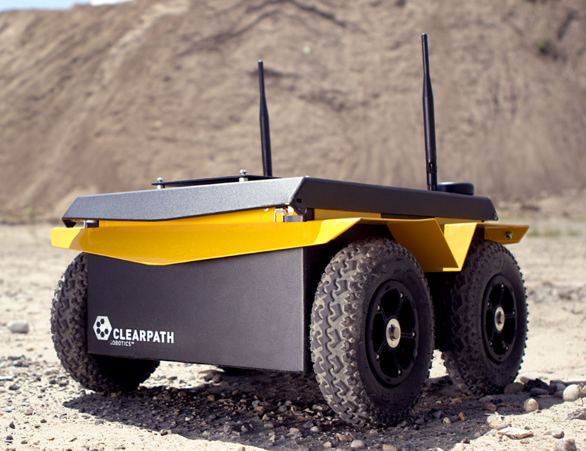
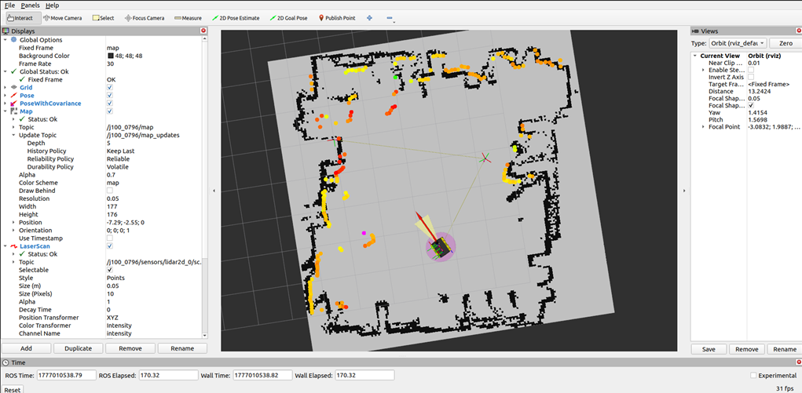
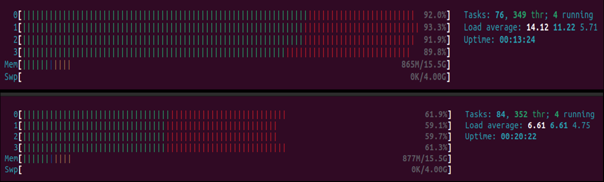
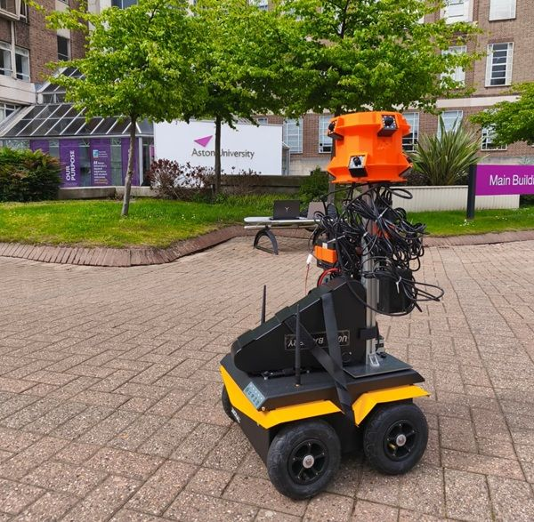

Jackal Autonomous Navigation
I took a Clearpath Jackal from a bare platform to a robot that runs its own data-collection missions. I installed the operating system and drivers, set up its sensors, configured mapping, localisation and autonomous navigation in ROS 2 Humble, and cut the on-board CPU load by about a third. On top of that I built a mission orchestrator that records synchronised, multi-modal datasets on every run, and a communication stack that links the Jackal to a tethered drone.

Platform bring-up
I installed Ubuntu 22.04 and ROS 2 Humble on the Jackal's on-board computer, set up the Clearpath drivers and robot configuration, and brought up the SICK TIM 2D LiDAR and IMU with the correct TF frames. A namespaced robot setup and a fixed network configuration mean every sensor publishes reliably from boot.

Mapping, localisation & navigation
I mapped indoor spaces with SLAM Toolbox and saved them as occupancy grids. On a saved map, AMCL localises the robot from its LiDAR scans and Nav2 plans and follows a path to any goal set in RViz, through corridors and doorways.
Maps can be switched at launch or while the robot is running, so the same setup works across different buildings.

CPU load optimisation
With the full navigation stack running, all four CPU cores sat above 90%, which made localisation and planning unstable.
After profiling and trimming the stack, every core runs at around 60% and the load average fell from 14.1 to 6.6. The robot now navigates smoothly and has headroom left for recording.

Synchronised multi-modal data collection
A mission orchestrator turns every navigation goal into a complete, synchronised recording. It intercepts the goal from RViz, starts the external recording devices over SSH, waits until they are ready, starts rosbag2, and only then hands the goal to Nav2. When the robot arrives, everything shuts down in reverse order.
Each run captures LiDAR, odometry, IMU, TF, localisation and planner data into its own timestamped folder, so runs are repeatable and nothing gets overwritten. Joystick and keyboard modes record the same way while the robot is driven by hand, without ever touching its velocity commands.
Tethered robot–drone link
A separate communication stack lets the Jackal coordinate with a tethered drone and its winch. The robot's pose and velocity go out over CAN bus, the drone's pose is reconstructed from incoming CAN frames, and the robot's localised position streams over serial to the embedded winch controller in real time.
/stack